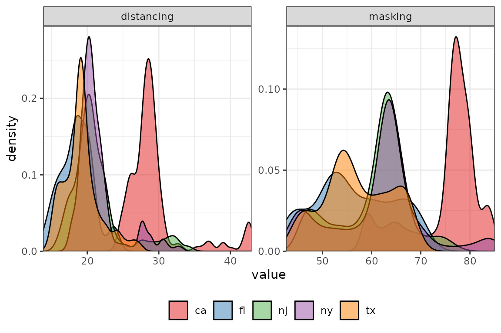

Examples of Preprocessing and Models
Source:vignettes/preprocessing-and-models.Rmd
preprocessing-and-models.RmdIntroduction
The epipredict package utilizes the
tidymodels framework, namely {recipes} for dplyr-like pipeable sequences of
feature engineering and {parsnip} for a
unified interface to a range of models.
epipredict has additional customized feature engineering
and preprocessing steps, such as step_epi_lag(),
step_population_scaling(), step_epi_naomit().
They can be used along with steps from the recipes
package for more feature engineering.
In this vignette, we will illustrate some examples of how to use
epipredict with recipes and
parsnip for different purposes of epidemiological
forecasting. We will focus on basic autoregressive models, in which
COVID cases and deaths in the near future are predicted using a linear
combination of cases and deaths in the near past.
The remaining vignette will be split into three sections. The first section, we will use a Poisson regression to predict death counts. In the second section, we will use a linear regression to predict death rates. Last but not least, we will create a classification model for hotspot predictions.
Poisson Regression
During COVID-19, the US Center for Disease Control and Prevention (CDC) collected models and forecasts to characterize the state of an outbreak and its course. They use it to inform public health decision makers on potential consequences of deploying control measures.
One of the outcomes that the CDC forecasts is death
counts from COVID-19. Although there are many state-of-the-art
models, we choose to use Poisson regression, the textbook example for
modeling count data, as an illustration for using the
epipredict package with other existing tidymodels
packages.
x <- pub_covidcast(
source = "jhu-csse",
signals = "confirmed_incidence_num",
time_type = "day",
geo_type = "state",
time_values = epirange(20210604, 20211231),
geo_values = "ca,fl,tx,ny,nj"
) %>%
select(geo_value, time_value, cases = value)
y <- pub_covidcast(
source = "jhu-csse",
signals = "deaths_incidence_num",
time_type = "day",
geo_type = "state",
time_values = epirange(20210604, 20211231),
geo_values = "ca,fl,tx,ny,nj"
) %>%
select(geo_value, time_value, deaths = value)
counts_subset <- full_join(x, y, by = c("geo_value", "time_value")) %>%
as_epi_df()The counts_subset dataset comes from the
epidatr package, and contains the number of confirmed cases
and deaths from June 4, 2021 to Dec 31, 2021 in some U.S. states.
We wish to predict the 7-day ahead death counts with lagged cases and deaths. Furthermore, we will let each state be a dummy variable. Using differential intercept coefficients, we can allow for an intercept shift between states.
The model takes the form \[\begin{aligned} \log\left( \mu_{t+7} \right) &= \beta_0 + \delta_1 s_{\text{state}_1} + \delta_2 s_{\text{state}_2} + \cdots + \nonumber \\ &\quad\beta_1 \text{deaths}_{t} + \beta_2 \text{deaths}_{t-7} + \beta_3 \text{cases}_{t} + \beta_4 \text{cases}_{t-7}, \end{aligned}\]where \(\mu_{t+7} = \mathbb{E}(y_{t+7})\), and \(y_{t+7}\) is assumed to follow a Poisson distribution with mean \(\mu_{t+7}\); \(s_{\text{state}}\) are dummy variables for each state and take values of either 0 or 1.
Preprocessing steps will be performed to prepare the data for model
fitting. But before diving into them, it will be helpful to understand
what roles are in the recipes framework.
Aside on recipes
recipes can assign one or more roles to each column in
the data. The roles are not restricted to a predefined set; they can be
anything. For most conventional situations, they are typically
“predictor” and/or “outcome”. Additional roles enable targeted
step_*() operations on specific variables or groups of
variables.
In our case, the role predictor is given to explanatory
variables on the right-hand side of the model (in the equation above).
The role outcome is the response variable that we wish to
predict. geo_value and time_value are
predefined roles that are unique to the epipredict package.
Since we work with epi_df objects, all datasets should have
geo_value and time_value passed through
automatically with these two roles assigned to the appropriate columns
in the data.
The recipes package also allows manual
alterations of roles in bulk. There are a few handy functions that
can be used together to help us manipulate variable roles easily.
update_role()alters an existing role in the recipe or assigns an initial role to variables that do not yet have a declared role.
add_role()adds an additional role to variables that already have a role in the recipe, without overwriting old roles.
remove_role()eliminates a single existing role in the recipe.
End aside
Notice in the following preprocessing steps, we used
add_role() on geo_value_factor since,
currently, the default role for it is raw, but we would
like to reuse this variable as predictors.
counts_subset <- counts_subset %>%
mutate(geo_value_factor = as.factor(geo_value)) %>%
as_epi_df()
epi_recipe(counts_subset)
#>
#> ── Epi Recipe ──────────────────────────────────────────────────────────────────
#>
#> ── Inputs
#> Number of variables by role
#> raw: 3
#> geo_value: 1
#> time_value: 1
r <- epi_recipe(counts_subset) %>%
add_role(geo_value_factor, new_role = "predictor") %>%
step_dummy(geo_value_factor) %>%
## Occasionally, data reporting errors / corrections result in negative
## cases / deaths
step_mutate(cases = pmax(cases, 0), deaths = pmax(deaths, 0)) %>%
step_epi_lag(cases, deaths, lag = c(0, 7)) %>%
step_epi_ahead(deaths, ahead = 7, role = "outcome") %>%
step_epi_naomit()After specifying the preprocessing steps, we will use the
parsnip package for modeling and producing the prediction
for death count, 7 days after the latest available date in the
dataset.
latest <- get_test_data(r, counts_subset)
wf <- epi_workflow(r, parsnip::poisson_reg()) %>%
fit(counts_subset)
predict(wf, latest) %>% filter(!is.na(.pred))
#> An `epi_df` object, 5 x 3 with metadata:
#> * geo_type = state
#> * time_type = day
#> * as_of = 2023-12-23 01:17:02.832702
#>
#> # A tibble: 5 × 3
#> geo_value time_value .pred
#> * <chr> <date> <dbl>
#> 1 ca 2021-12-31 108.
#> 2 fl 2021-12-31 270.
#> 3 nj 2021-12-31 22.5
#> 4 ny 2021-12-31 94.8
#> 5 tx 2021-12-31 91.0Note that the time_value corresponds to the last
available date in the training set, NOT to the target
date of the forecast (2022-01-07).
Let’s take a look at the fit:
extract_fit_engine(wf)
#>
#> Call: stats::glm(formula = ..y ~ ., family = stats::poisson, data = data)
#>
#> Coefficients:
#> (Intercept) geo_value_factor_fl geo_value_factor_nj
#> 3.970e+00 -1.487e-01 -1.425e+00
#> geo_value_factor_ny geo_value_factor_tx lag_0_cases
#> -6.865e-01 3.025e-01 1.339e-05
#> lag_7_cases lag_0_deaths lag_7_deaths
#> 1.717e-06 1.731e-03 8.566e-04
#>
#> Degrees of Freedom: 984 Total (i.e. Null); 976 Residual
#> Null Deviance: 139600
#> Residual Deviance: 58110 AIC: 62710Up to now, we’ve used the Poisson regression to model count data. Poisson regression can also be used to model rate data, such as case rates or death rates, by incorporating offset terms in the model.
To model death rates, the Poisson regression would be expressed as: \[\begin{aligned} \log\left( \mu_{t+7} \right) &= \log(\text{population}) + \beta_0 + \delta_1 s_{\text{state}_1} + \delta_2 s_{\text{state}_2} + \cdots + \nonumber \\ &\quad\beta_1 \text{deaths}_{t} + \beta_2 \text{deaths}_{t-7} + \beta_3 \text{cases}_{t} + \beta_4 \text{cases}_{t-7} \end{aligned}\]where \(\log(\text{population})\) is the log of the state population that was used to scale the count data on the left-hand side of the equation. This offset is simply a predictor with coefficient fixed at 1 rather than estimated.
There are several ways to model rate data given count and population
data. First, in the parsnip framework, we could specify the
formula in fit(). However, by doing so we lose the ability
to use the recipes framework to create new variables since
variables that do not exist in the original dataset (such as, here, the
lags and leads) cannot be called directly in fit().
Alternatively, step_population_scaling() and
layer_population_scaling() in the epipredict
package can perform the population scaling if we provide the population
data, which we will illustrate in the next section.
Linear Regression
For COVID-19, the CDC required submission of case and death count
predictions. However, the Delphi Group preferred to train on rate data
instead, because it puts different locations on a similar scale
(eliminating the need for location-specific intercepts). We can use a
liner regression to predict the death rates and use state population
data to scale the rates to counts.1 We will do so using
layer_population_scaling() from the epipredict
package.
Additionally, when forecasts are submitted, prediction intervals
should be provided along with the point estimates. This can be obtained
via postprocessing using layer_residual_quantiles(). It is
worth pointing out, however, that
layer_residual_quantiles() should be used before population
scaling or else the transformation will make the results
uninterpretable.
We wish, now, to predict the 7-day ahead death counts with lagged case rates and death rates, along with some extra behaviourial predictors. Namely, we will use survey data from COVID-19 Trends and Impact Survey.
The survey data provides the estimated percentage of people who wore a mask for most or all of the time while in public in the past 7 days and the estimated percentage of respondents who reported that all or most people they encountered in public in the past 7 days maintained a distance of at least 6 feet.
State-wise population data from the 2019 U.S. Census is included in
this package and will be used in
layer_population_scaling().
behav_ind_mask <- pub_covidcast(
source = "fb-survey",
signals = "smoothed_wwearing_mask_7d",
time_type = "day",
geo_type = "state",
time_values = epirange(20210604, 20211231),
geo_values = "ca,fl,tx,ny,nj"
) %>%
select(geo_value, time_value, masking = value)
behav_ind_distancing <- pub_covidcast(
source = "fb-survey",
signals = "smoothed_wothers_distanced_public",
time_type = "day",
geo_type = "state",
time_values = epirange(20210604, 20211231),
geo_values = "ca,fl,tx,ny,nj"
) %>%
select(geo_value, time_value, distancing = value)
pop_dat <- state_census %>% select(abbr, pop)
behav_ind <- behav_ind_mask %>%
full_join(behav_ind_distancing, by = c("geo_value", "time_value"))Rather than using raw mask-wearing / social-distancing metrics, for the sake of illustration, we’ll convert both into categorical predictors.

We will take a subset of death rate and case rate data from the
built-in dataset case_death_rate_subset.
jhu <- filter(
case_death_rate_subset,
time_value >= "2021-06-04",
time_value <= "2021-12-31",
geo_value %in% c("ca", "fl", "tx", "ny", "nj")
)Preprocessing steps will again rely on functions from the
epipredict package as well as the recipes
package. There are also many functions in the recipes
package that allow for scalar
transformations, such as log transformations and data centering. In
our case, we will center the numerical predictors to allow for a more
meaningful interpretation of the intercept.
jhu <- jhu %>%
mutate(geo_value_factor = as.factor(geo_value)) %>%
left_join(behav_ind, by = c("geo_value", "time_value")) %>%
as_epi_df()
r <- epi_recipe(jhu) %>%
add_role(geo_value_factor, new_role = "predictor") %>%
step_dummy(geo_value_factor) %>%
step_epi_lag(case_rate, death_rate, lag = c(0, 7, 14)) %>%
step_mutate(
masking = cut_number(masking, 5),
distancing = cut_number(distancing, 5)
) %>%
step_epi_ahead(death_rate, ahead = 7, role = "outcome") %>%
step_center(contains("lag"), role = "predictor") %>%
step_epi_naomit()As a sanity check we can examine the structure of the training data:
glimpse(slice_sample(bake(prep(r, jhu), jhu), n = 6))
#> Rows: 6
#> Columns: 17
#> $ time_value <date> 2021-08-08, 2021-08-31, 2021-09-02, 2021-12-20, 2…
#> $ geo_value <chr> "ca", "ny", "ca", "ca", "ca", "ny"
#> $ case_rate <dbl> 29.64948, 24.89113, 37.63346, 20.61424, 19.05605, …
#> $ death_rate <dbl> 0.0889045, 0.1359364, 0.2514728, 0.1636569, 0.1654…
#> $ masking <fct> "(69.7,85]", "(60.2,63.9]", "(69.7,85]", "(69.7,85…
#> $ distancing <fct> "(21.1,27]", "(21.1,27]", "(27,43]", "(21.1,27]", …
#> $ geo_value_factor_fl <dbl> 0, 0, 0, 0, 0, 0
#> $ geo_value_factor_nj <dbl> 0, 0, 0, 0, 0, 0
#> $ geo_value_factor_ny <dbl> 0, 1, 0, 0, 0, 1
#> $ geo_value_factor_tx <dbl> 0, 0, 0, 0, 0, 0
#> $ lag_0_case_rate <dbl> 2.707813, -2.050528, 10.691801, -6.327426, -7.8856…
#> $ lag_7_case_rate <dbl> -2.0251734, -3.5059342, 10.9109783, -10.9403008, -…
#> $ lag_14_case_rate <dbl> -8.9506539, -2.9459354, 8.4699142, -9.6847512, -10…
#> $ lag_0_death_rate <dbl> -0.1929691, -0.1459372, -0.0304008, -0.1182167, -0…
#> $ lag_7_death_rate <dbl> -0.1784541, -0.1754886, -0.0822920, -0.1153137, -0…
#> $ lag_14_death_rate <dbl> -0.2234506, -0.1592353, -0.1320060, -0.0877352, -0…
#> $ ahead_7_death_rate <dbl> -0.0417307, 0.1677041, 0.2598189, 0.1317238, 0.153…Before directly predicting the results, we need to add postprocessing
layers to obtain the death counts instead of death rates. Note that the
rates used so far are “per 100K people” rather than “per person”. We’ll
also use quantile regression with the quantile_reg engine
rather than ordinary least squares to create median predictions and a
90% prediction interval.
f <- frosting() %>%
layer_predict() %>%
layer_add_target_date("2022-01-07") %>%
layer_threshold(.pred, lower = 0) %>%
layer_quantile_distn() %>%
layer_naomit(.pred) %>%
layer_population_scaling(
.pred, .pred_distn,
df = pop_dat,
rate_rescaling = 1e5,
by = c("geo_value" = "abbr"),
df_pop_col = "pop"
)
wf <- epi_workflow(r, quantile_reg(quantile_levels = c(.05, .5, .95))) %>%
fit(jhu) %>%
add_frosting(f)
latest <- get_test_data(recipe = r, x = jhu)
p <- predict(wf, latest)
p
#> An `epi_df` object, 5 x 7 with metadata:
#> * geo_type = state
#> * time_type = day
#> * as_of = 2022-05-31 19:08:25.791826
#>
#> # A tibble: 5 × 7
#> geo_value time_value .pred target_date .pred_distn
#> * <chr> <date> <dist> <date> <dist>
#> 1 ca 2021-12-31 quantiles(0.18)[3] 2022-01-07 quantiles(0.18)[2]
#> 2 fl 2021-12-31 quantiles(0.35)[3] 2022-01-07 quantiles(0.36)[2]
#> 3 nj 2021-12-31 quantiles(0.65)[3] 2022-01-07 quantiles(0.64)[2]
#> 4 ny 2021-12-31 quantiles(0.7)[3] 2022-01-07 quantiles(0.69)[2]
#> 5 tx 2021-12-31 quantiles(0.3)[3] 2022-01-07 quantiles(0.3)[2]
#> # ℹ 2 more variables: .pred_scaled <dist>, .pred_distn_scaled <dist>The columns marked *_scaled have been rescaled to the
correct units, in this case deaths rather than deaths per
100K people (these remain in .pred).
To look at the prediction intervals:
p %>%
select(geo_value, target_date, .pred_scaled, .pred_distn_scaled) %>%
pivot_quantiles_wider(.pred_distn_scaled)
#> # A tibble: 5 × 5
#> geo_value target_date .pred_scaled `0.25` `0.75`
#> <chr> <date> <dist> <dbl> <dbl>
#> 1 ca 2022-01-07 quantiles(71.61)[3] 48.8 94.0
#> 2 fl 2022-01-07 quantiles(74.7)[3] 48.4 104.
#> 3 nj 2022-01-07 quantiles(57.4)[3] 45.5 68.7
#> 4 ny 2022-01-07 quantiles(135.85)[3] 108. 163.
#> 5 tx 2022-01-07 quantiles(86.77)[3] 68.6 107.Last but not least, let’s take a look at the regression fit and check the coefficients:
#> Call:
#> quantreg::rq(formula = ..y ~ ., tau = ~c(0.05, 0.5, 0.95), data = data,
#> na.action = stats::na.omit, method = "br", model = FALSE)
#>
#> Coefficients:
#> tau= 0.05 tau= 0.50 tau= 0.95
#> (Intercept) 0.210811625 0.2962574475 0.417583265
#> geo_value_factor_fl 0.032085820 0.0482361119 0.171126713
#> geo_value_factor_nj 0.007313762 -0.0033797953 -0.025251865
#> geo_value_factor_ny -0.001489163 -0.0199485947 -0.032635584
#> geo_value_factor_tx 0.029077485 0.0391980273 0.071961515
#> lag_0_case_rate -0.001636588 -0.0011625693 -0.001430622
#> lag_7_case_rate 0.004700752 0.0057822095 0.006912655
#> lag_14_case_rate 0.001715816 0.0004224753 0.003448733
#> lag_0_death_rate 0.462341754 0.5274192012 0.164856372
#> lag_7_death_rate -0.007368501 0.1132903956 0.172687438
#> lag_14_death_rate -0.072500707 -0.0270474349 0.181279299
#>
#> Degrees of freedom: 950 total; 939 residualClassification
Sometimes it is preferable to create a predictive model for surges or
upswings rather than for raw values. In this case, the target is to
predict if the future will have increased case rates (denoted
up), decreased case rates (down), or flat case
rates (flat) relative to the current level. Such models may
be referred to as “hotspot prediction models”. We will follow the
analysis in McDonald, Bien, Green, Hu, et al.
but extend the application to predict three categories instead of
two.
Hotspot prediction uses a categorical outcome variable defined in terms of the relative change of \(Y_{\ell, t+a}\) compared to \(Y_{\ell, t}\). Where \(Y_{\ell, t}\) denotes the case rates in location \(\ell\) at time \(t\). We define the response variables as follows:
\[ Z_{\ell, t}= \begin{cases} \text{up}, & \text{if}\ Y^{\Delta}_{\ell, t} > 0.25 \\ \text{down}, & \text{if}\ Y^{\Delta}_{\ell, t} < -0.20\\ \text{flat}, & \text{otherwise} \end{cases} \]
where \(Y^{\Delta}_{\ell, t} = (Y_{\ell,
t}- Y_{\ell, t-7})\ /\ (Y_{\ell, t-7})\). We say location \(\ell\) is a hotspot at time \(t\) when \(Z_{\ell,t}\) is up, meaning
the number of newly reported cases over the past 7 days has increased by
at least 25% compared to the preceding week. When \(Z_{\ell,t}\) is categorized as
down, it suggests that there has been at least a 20%
decrease in newly reported cases over the past 7 days (a 20% decrease is
the inverse of a 25% increase). Otherwise, we will consider the trend to
be flat.
The expression of the multinomial regression we will use is as follows:
\[ \pi_{j}(x) = \text{Pr}(Z_{\ell,t} = j|x) = \frac{e^{g_j(x)}}{1 + \sum_{k=1}^{2}e^{g_k(x)} } \]
where \(j\) is either down, flat, or up
\[\begin{aligned} g_{\text{down}}(x) &= 0.\\ g_{\text{flat}}(x) &= \log\left(\frac{Pr(Z_{\ell,t}=\text{flat}\mid x)}{Pr(Z_{\ell,t}=\text{down}\mid x)}\right) = \beta_{10} + \beta_{11} t + \delta_{10} s_{\text{state_1}} + \delta_{11} s_{\text{state_2}} + \cdots \nonumber \\ &\quad + \beta_{12} Y^{\Delta}_{\ell, t} + \beta_{13} Y^{\Delta}_{\ell, t-7} \\ g_{\text{flat}}(x) &= \log\left(\frac{Pr(Z_{\ell,t}=\text{up}\mid x)}{Pr(Z_{\ell,t}=\text{down} \mid x)}\right) = \beta_{20} + \beta_{21}t + \delta_{20} s_{\text{state_1}} + \delta_{21} s_{\text{state}\_2} + \cdots \nonumber \\ &\quad + \beta_{22} Y^{\Delta}_{\ell, t} + \beta_{23} Y^{\Delta}\_{\ell, t-7} \end{aligned}\]Preprocessing steps are similar to the previous models with an
additional step of categorizing the response variables. Again, we will
use a subset of death rate and case rate data from our built-in dataset
case_death_rate_subset.
jhu <- case_death_rate_subset %>%
dplyr::filter(
time_value >= "2021-06-04",
time_value <= "2021-12-31",
geo_value %in% c("ca", "fl", "tx", "ny", "nj")
) %>%
mutate(geo_value_factor = as.factor(geo_value))
r <- epi_recipe(jhu) %>%
add_role(time_value, new_role = "predictor") %>%
step_dummy(geo_value_factor) %>%
step_growth_rate(case_rate, role = "none", prefix = "gr_") %>%
step_epi_lag(starts_with("gr_"), lag = c(0, 7, 14)) %>%
step_epi_ahead(starts_with("gr_"), ahead = 7, role = "none") %>%
# note recipes::step_cut() has a bug in it, or we could use that here
step_mutate(
response = cut(
ahead_7_gr_7_rel_change_case_rate,
breaks = c(-Inf, -0.2, 0.25, Inf) / 7, # division gives weekly not daily
labels = c("down", "flat", "up")
),
role = "outcome"
) %>%
step_rm(has_role("none"), has_role("raw")) %>%
step_epi_naomit()We will fit the multinomial regression and examine the predictions:
wf <- epi_workflow(r, parsnip::multinom_reg()) %>%
fit(jhu)
latest <- get_test_data(recipe = r, x = jhu)
predict(wf, latest) %>% filter(!is.na(.pred_class))
#> An `epi_df` object, 5 x 3 with metadata:
#> * geo_type = state
#> * time_type = day
#> * as_of = 2022-05-31 19:08:25.791826
#>
#> # A tibble: 5 × 3
#> geo_value time_value .pred_class
#> * <chr> <date> <fct>
#> 1 ca 2021-12-31 up
#> 2 fl 2021-12-31 up
#> 3 nj 2021-12-31 up
#> 4 ny 2021-12-31 up
#> 5 tx 2021-12-31 upWe can also look at the estimated coefficients and model summary information:
extract_fit_engine(wf)
#> Call:
#> nnet::multinom(formula = ..y ~ ., data = data, trace = FALSE)
#>
#> Coefficients:
#> (Intercept) time_value geo_value_factor_fl geo_value_factor_nj
#> flat -144.2225 0.007754541 -1.3251323 1.137559
#> up -133.1994 0.007082196 -0.5081303 1.562700
#> geo_value_factor_ny geo_value_factor_tx lag_0_gr_7_rel_change_case_rate
#> flat 24.74419 -0.3345776 18.96354
#> up 24.84975 -0.3176996 33.79518
#> lag_7_gr_7_rel_change_case_rate lag_14_gr_7_rel_change_case_rate
#> flat 33.19049 7.157042
#> up 56.52374 4.684437
#>
#> Residual Deviance: 1157.928
#> AIC: 1193.928One could also use a formula in epi_recipe() to achieve
the same results as above. However, only one of
add_formula(), add_recipe(), or
workflow_variables() can be specified. For the purpose of
demonstrating add_formula rather than
add_recipe, we will prep and bake
our recipe to return a data.frame that could be used for
model fitting.
b <- bake(prep(r, jhu), jhu)
epi_workflow() %>%
add_formula(
response ~ geo_value + time_value + lag_0_gr_7_rel_change_case_rate +
lag_7_gr_7_rel_change_case_rate + lag_14_gr_7_rel_change_case_rate
) %>%
add_model(parsnip::multinom_reg()) %>%
fit(data = b)
#> ══ Workflow [trained] ══════════════════════════════════════════════════════════
#> Preprocessor: Formula
#> Model: multinom_reg()
#>
#> ── Preprocessor ────────────────────────────────────────────────────────────────
#> response ~ geo_value + time_value + lag_0_gr_7_rel_change_case_rate +
#> lag_7_gr_7_rel_change_case_rate + lag_14_gr_7_rel_change_case_rate
#>
#> ── Model ───────────────────────────────────────────────────────────────────────
#> Call:
#> nnet::multinom(formula = ..y ~ ., data = data, trace = FALSE)
#>
#> Coefficients:
#> (Intercept) geo_valuefl geo_valuenj geo_valueny geo_valuetx time_value
#> flat -144.2169 -1.3265549 1.133934 24.75059 -0.3335115 0.007754345
#> up -133.3502 -0.5120186 1.559702 24.85665 -0.3158343 0.007090249
#> lag_0_gr_7_rel_change_case_rate lag_7_gr_7_rel_change_case_rate
#> flat 19.02252 33.20794
#> up 33.84660 56.57061
#> lag_14_gr_7_rel_change_case_rate
#> flat 7.140372
#> up 4.668915
#>
#> Residual Deviance: 1157.919
#> AIC: 1193.919Benefits of Lagging and Leading in epipredict
The step_epi_ahead and step_epi_lag
functions in the epipredict package is handy for creating
correct lags and leads for future predictions.
Let’s start with a simple dataset and preprocessing:
ex <- filter(
case_death_rate_subset,
time_value >= "2021-12-01",
time_value <= "2021-12-31",
geo_value == "ca"
)
dim(ex)
#> [1] 31 4We want to predict death rates on 2022-01-07, which is 7 days ahead of the latest available date in our dataset.
We will compare two methods of trying to create lags and leads:
p1 <- epi_recipe(ex) %>%
step_epi_lag(case_rate, lag = c(0, 7, 14)) %>%
step_epi_lag(death_rate, lag = c(0, 7, 14)) %>%
step_epi_ahead(death_rate, ahead = 7, role = "outcome") %>%
step_epi_naomit() %>%
prep(ex)
b1 <- bake(p1, ex)
b1
#> # A tibble: 17 × 11
#> time_value geo_value case_rate death_rate lag_0_case_rate lag_7_case_rate
#> <date> <chr> <dbl> <dbl> <dbl> <dbl>
#> 1 2021-12-15 ca 15.8 0.157 15.8 18.0
#> 2 2021-12-16 ca 16.3 0.155 16.3 17.4
#> 3 2021-12-17 ca 16.9 0.158 16.9 17.4
#> 4 2021-12-18 ca 17.6 0.164 17.6 17.2
#> 5 2021-12-19 ca 19.1 0.165 19.1 16.3
#> 6 2021-12-20 ca 20.6 0.164 20.6 16.0
#> 7 2021-12-21 ca 22.6 0.165 22.6 16.6
#> 8 2021-12-22 ca 26.2 0.163 26.2 15.8
#> 9 2021-12-23 ca 30.8 0.167 30.8 16.3
#> 10 2021-12-24 ca 33.8 0.167 33.8 16.9
#> 11 2021-12-25 ca 32.6 0.153 32.6 17.6
#> 12 2021-12-26 ca 34.5 0.153 34.5 19.1
#> 13 2021-12-27 ca 48.4 0.132 48.4 20.6
#> 14 2021-12-28 ca 54.9 0.142 54.9 22.6
#> 15 2021-12-29 ca 63.7 0.140 63.7 26.2
#> 16 2021-12-30 ca 76.0 0.140 76.0 30.8
#> 17 2021-12-31 ca 84.4 0.142 84.4 33.8
#> # ℹ 5 more variables: lag_14_case_rate <dbl>, lag_0_death_rate <dbl>,
#> # lag_7_death_rate <dbl>, lag_14_death_rate <dbl>, ahead_7_death_rate <dbl>
p2 <- epi_recipe(ex) %>%
step_mutate(
lag0case_rate = lag(case_rate, 0),
lag7case_rate = lag(case_rate, 7),
lag14case_rate = lag(case_rate, 14),
lag0death_rate = lag(death_rate, 0),
lag7death_rate = lag(death_rate, 7),
lag14death_rate = lag(death_rate, 14),
ahead7death_rate = lead(death_rate, 7)
) %>%
step_epi_naomit() %>%
prep(ex)
b2 <- bake(p2, ex)
b2
#> # A tibble: 10 × 11
#> time_value geo_value case_rate death_rate lag0case_rate lag7case_rate
#> <date> <chr> <dbl> <dbl> <dbl> <dbl>
#> 1 2021-12-15 ca 15.8 0.157 15.8 18.0
#> 2 2021-12-16 ca 16.3 0.155 16.3 17.4
#> 3 2021-12-17 ca 16.9 0.158 16.9 17.4
#> 4 2021-12-18 ca 17.6 0.164 17.6 17.2
#> 5 2021-12-19 ca 19.1 0.165 19.1 16.3
#> 6 2021-12-20 ca 20.6 0.164 20.6 16.0
#> 7 2021-12-21 ca 22.6 0.165 22.6 16.6
#> 8 2021-12-22 ca 26.2 0.163 26.2 15.8
#> 9 2021-12-23 ca 30.8 0.167 30.8 16.3
#> 10 2021-12-24 ca 33.8 0.167 33.8 16.9
#> # ℹ 5 more variables: lag14case_rate <dbl>, lag0death_rate <dbl>,
#> # lag7death_rate <dbl>, lag14death_rate <dbl>, ahead7death_rate <dbl>Notice the difference in number of rows b1 and
b2 returns. This is because the second version, the one
that doesn’t use step_epi_ahead and
step_epi_lag, has omitted dates compared to the one that
used the epipredict functions.
dates_used_in_training1 <- b1 %>%
select(-ahead_7_death_rate) %>%
na.omit() %>%
pull(time_value)
dates_used_in_training1
#> [1] "2021-12-15" "2021-12-16" "2021-12-17" "2021-12-18" "2021-12-19"
#> [6] "2021-12-20" "2021-12-21" "2021-12-22" "2021-12-23" "2021-12-24"
#> [11] "2021-12-25" "2021-12-26" "2021-12-27" "2021-12-28" "2021-12-29"
#> [16] "2021-12-30" "2021-12-31"
dates_used_in_training2 <- b2 %>%
select(-ahead7death_rate) %>%
na.omit() %>%
pull(time_value)
dates_used_in_training2
#> [1] "2021-12-15" "2021-12-16" "2021-12-17" "2021-12-18" "2021-12-19"
#> [6] "2021-12-20" "2021-12-21" "2021-12-22" "2021-12-23" "2021-12-24"The model that is trained based on the recipes functions will predict 7 days ahead from 2021-12-24 instead of 7 days ahead from 2021-12-31.
References
McDonald, Bien, Green, Hu, et al. “Can auxiliary indicators improve COVID-19 forecasting and hotspot prediction?.” Proceedings of the National Academy of Sciences 118.51 (2021): e2111453118. doi:10.1073/pnas.2111453118
Attribution
This object contains a modified part of the COVID-19 Data Repository by the Center for Systems Science and Engineering (CSSE) at Johns Hopkins University as republished in the COVIDcast Epidata API.
This data set is licensed under the terms of the Creative Commons Attribution 4.0 International license by the Johns Hopkins University on behalf of its Center for Systems Science in Engineering. Copyright Johns Hopkins University 2020.